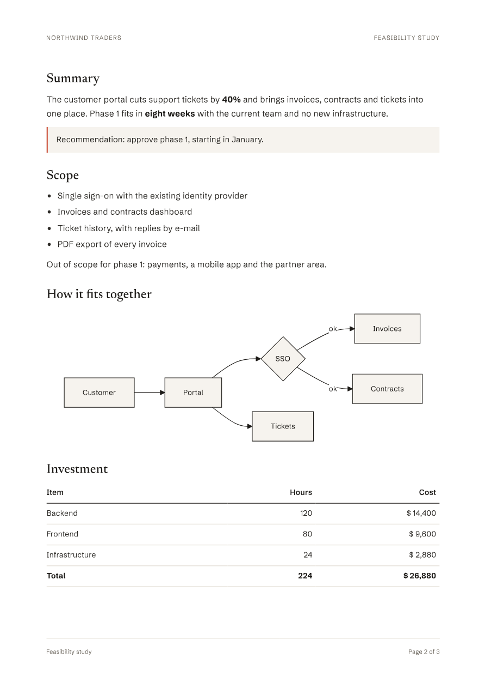
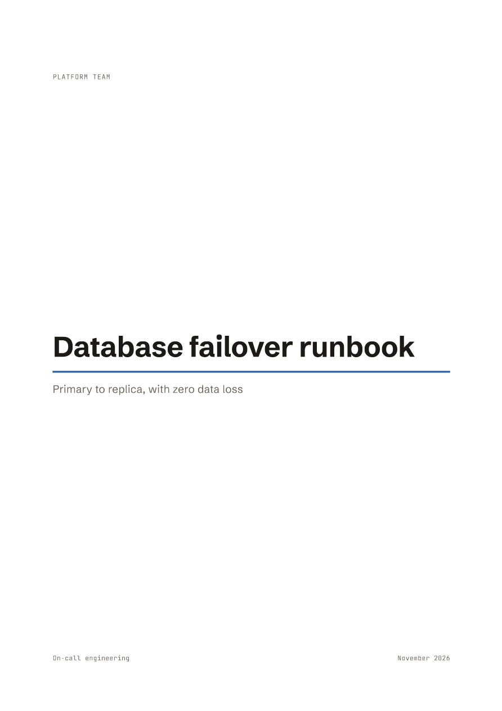

report
The default. Editorial serif titles over a clean grotesque, for proposals, feasibility studies and consulting reports.
Open the PDF →
Reports, documentation and proposals with a cover, running headers and “Page 2 of 4”, without a line of CSS. Pick a theme and deliver.
$ npx prelum report.md
On the left, a Markdown report printed with GitHub’s stylesheet. On the right, the same file through prelum’s report theme.


One line in the frontmatter changes the whole look. You never touch a stylesheet.
Cover, running headers, “Page 2 of 4”, and tables that break across pages with their header repeated.
Diagrams drawn in the theme’s colors. Fonts and Mermaid ship with the package: nothing leaves your machine.
Bundled fonts on every machine. With SOURCE_DATE_EPOCH, the same file prints the same bytes.
Set theme: in the frontmatter, or pass --theme. Every page below is real output.
reportThe default. Editorial serif titles over a clean grotesque, for proposals, feasibility studies and consulting reports.
Open the PDF →technicalAll sans, a blue accent and dark code blocks, for documentation, implementation reports and runbooks.
Open the PDF →

No install step: npx fetches prelum the first time.
$ npx prelum report.md
prelum■ 0.1.0
✓ markdown 157 words
✓ mermaid 1 diagram
✓ theme report
✓ pages cover, 3 pages
■ report.pdf ready in 0.9 snpx playwright install chromium once.prelum is a small tool built in the open. Issues, ideas and themes are welcome on GitHub.
github.com/prelum/prelum